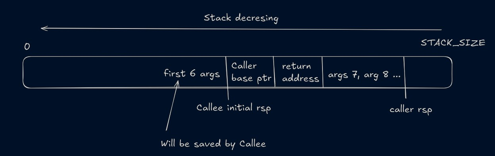
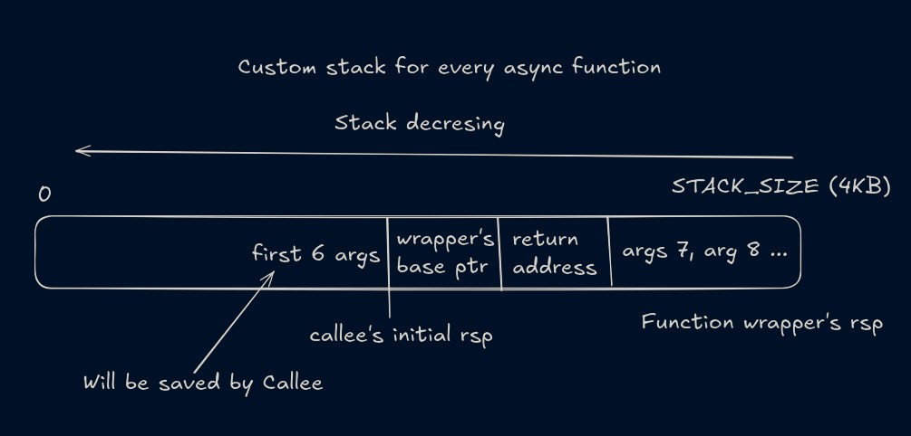

AFX - Asynchronous Function Execution
Go has a thing called called Go routines. They are also called co-routines, green threads etc in other languages. The concept of a go routine is that you create a function that will be executed concurrently, much like how different processes run concurrently in OS. I was always fascinated by how Go is able to do that at user level, and whether it can be achieved in C or not.
How Go routines works
The Go runtime creates a separate thread called sysmon. This thread monitors and schedules other go routines. These go routines runs on a pool of threads. Before Go 1.14, the Go compiler used to put checks inside a go routine at specific places like before a function call. When the control reaches these checks, it stops the thread and gives control back to the sysmon. The sysmon then schedules another go routines to run on that thread. This approach is known as Co-operative scheduling.
This works great for tasks in which a lot of I/O calls are made, but fails to work when there is a tight loop. Hence in Go 1.14, Preemptive scheduling was added. In Preemptive scheduling, the sysmon checks whether there is a Go routine that is running for more than a specific time interval (10ms), and then forcefully pauses it by sending a signal.
Co-operative scheduling is almost impossible to implement at C level (or I just don't have enough knowledge), basically you have to write your own sort of pre-compiler that add the checks inside a function. However, preemptive scheduling seemed like a task that can be done in C.
More on Go scheduling: How go routines works
How to preempt a thread
We can send a signal to a thread and we can define a function that will be called when a thread receives a signal. This pauses the execution of that thread, and the kernel also provides us the cpu state at which the signal was received. We can change the cpu state and the program counter to start executing another part of code.
This is what I have done. I have created two threads, one is monitor that sends a SIGURG signal after every 10ms and another is executor thread that executes the function in hand. When the executor thread receives the signal, I store the cpu state for that routine and replaces the state of that thread with another routine. So after the thread resumes, it starts executing the next function.
Not as easy as it sounds
NOTE: To understand what is really going on, you need to have some knowledge of how a function call works under the hood.
First challenge: storing the context.
By context, I mean the data in CPU registers at that moment and the stack allocated for that function. Every thread has its own stack, which expands and shrinks dynamically. To switch between functions, we need to store the context of the ongoing function somewhere, and restore the context of next function in the CPU. We cannot use the same stack for every async function, because different functions uses different parts of the stack and changes made by some function will corrupt the stack for all the other functions. We can partition the stack in different portions for every async function, but non-async functions are also using the same stack so they can corrupt the stack for async functions. What we can do is to maintain different stacks for all async functions. This way, we can guarantee that no stack corruption will occur. But the stack limit can reach, we need to figure a way to extend the stack.
When a function is called, these many things happens
- The caller function (the function that is calling another function) stores first 6 args to rdi, rsi, rdx, rcx, r8 and r9 registers. All the next arguments are stored on stack. Then the caller stores its own return address and the value of rbp (base pointer) register on the stack. The first six args can also be stored on stack if needed, but that is done by callee.
- The caller calls the callee (the function that is being called). Callee function stores the value in registers for the first 6 args on the stack. This is known a function prologue. And after that the code that the programmer has written starts executing.
- After the execution, the callee resets the stack pointer (rsp) (if it has used it to store any of its own variables). And using the return address, the execution goes back to the caller.

Switching between functions is not so complicated. When the signal is handled, the kernel provides us a pointer to all the registers and we can copy them, and we can also change them. What is complicated is to start a function as a routine (or async function). We need to store the value of registers right after the function prologue, and we need to store the value of the args that are stored on stack (All the args after the 6th arg are stored on stack by the caller before calling a function). I have used inline assembly to store the register values, and I store the rbp register value (rbp_caller) right before the caller calls the callee and right after the callee function's prologue (rbp_callee). The space between these two addresses is where the return address, base pointer and arguments (if number of args are >6) are stored.
For every async function, an 8KB memory space is allocated as its own custom stack, and the data between rbp_caller and rbp_callee is copied. The initial idea was that we can embed some assembly code at the starting of the function to save the state of the registers and the stack and then we'll stop the execution of the function after storing its state by calling the leave and ret instruction. And then put a label (1:) just after these instruction. And We can store the rip register (address of the next instruction) at the address of the label 1. When any function calls the an async function, we store the context and then return without executing any of the code. And when the executor will put this function in its own context, it will skip the register and stack copying logic and jump to the label 1, and start executing the body of the function. That did not worked.
Second challenge: how many args are there.
When a function is called, the compiler writes some instructions in the function prologue that saves the value of the first 6 args on the stack(This is done by callee and is different from saving the args > 6 to the stack, which is done by caller). The problem is we cannot know at compile time how many arguments are being passed to a function, so we don't know how much stack after the rbp_callee should be saved (keep in mind that the stack is growing downwards, so its more like how much space before rbp_callee should we save). So we cannot just resume the execution of that function from there because we have not yet saved the data for first 6 args on the stack which is necessary.
To get around it, what I've done is I have made a wrapper around the original function that saves the registers and stack data and then returns. So for the initial caller it looks like the async function is complete and it goes on to do the next thing. But because we have saved the state, we now know that what data will be needed to call the original function i.e. the register values and the data stored on stack for args after the 6th arg. When a function is defined it has to be wrapped inside this async macro(details at the end).
#define async(ret_type, fn, args, body)\
ret_type fn args{\
body\
}\
__attribute__((noinline)) ret_type __AFX_PREFIX_##fn args {\
// saving cpu context and returning to the caller
save_cpu_context\
// scheduler starts the execution from here
// calling the original function
asm volatile(\
"callq %0\n\t"\
::"r"(fn)\
);\
// after the original function completes, deleting its stack
// and jumping to executor thread
_afx_delete_context();\
asm volatile(\
"jmp *%0\n\t"\
::"r"(_afx_executor_addr)\
);\
}
When the scheduler schedules the function (more like the routine) to execute, the rip at this point is pointing to the 1: label and at this place instead of executing the code in the body of the function, we calls the original function. At this point, the state of the cpu is the same as when the the original caller called the async function. Now when we call the original function again, its like we are doing the compiler's job of saving the args in registers and stack and then executing the callq instruction. Also initially all the space between rbp_caller and rbp_callee was being saved, but we don't need the return address and base pointer as we have returned to the caller function already. So now we only need to save the part of stack where caller have saved the args(if any). The image below describe what is being saved on the custom stack when the async function starts. The return address and base pointer are that of the wrapper function and not of the original caller function. And Callee is the original function which has been called again.

I wanted to make the syntax as easy as possible to use this scheduler, but there are only so many things one can do with C macros. So for now the syntax is:
//definition
async(
return_type, function_name, (arg1, arg2, ....), {
//body;
}
)
//call
function_name(arg1, arg2, ...); // for normal execution
afx(function_name(arg1, arg2, ...)); // for async execution
I have tried to explain it in as much as detail as I can, but I may have skipped some details. Check out the source code to really understand what's going on. This implementation will not work at all in anything that will make the thread go to sleep i.e. an I/O call, sleep timer etc. Because when a signal is received by a thread, it does care how much time is left in the timer or how much data is left to receive/send before it should wake up, instead it wakes up immediately and start executing the next line of code. So if the thread is blocked on an I/O call, and the monitor sends SIGURG to it, that I/O call is sort of cancelled. This is not at all what we want. To tackle this, we need to use multiple threads and we need to put the thread that has slept out of the list of functions to execute. And an event loop is needed that polls when a sleeping thread is ready for execution again. But that's for later.
Source code and references: https://github.com/vanshjangir/afx